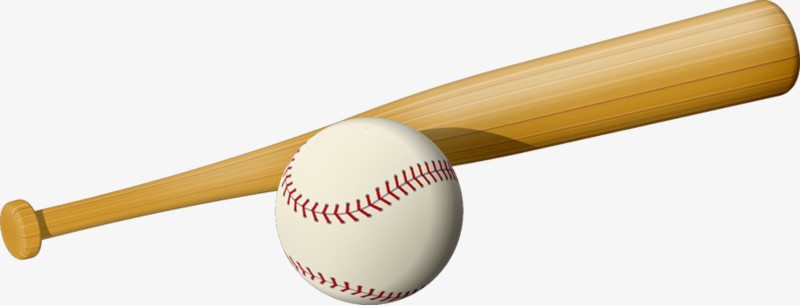

棒球是一種團體球類運動，在扇形的棒球場裡進行比賽，由兩隊交替進攻與防守，當進攻隊伍球員成功跑回本壘，即可得 1 分，比賽共分為 9 局， 9 局中得分最高的隊伍獲勝。每場棒球比賽由兩隊隊伍參加，每隊有 9 名球員，各隊攻守一次為 1 局（分上、下 2 個半局），依規定需打 9 局，以累積分數高者為勝， 9 局終了如平分，則延長比賽局數，直到分出勝負為止，但若兩隊分數相差 10 分以上， 7 局時可提早結束比賽；分數相差 15 分以上時， 5 局時可提早結束比賽。每場比賽會有一到六位裁判不等，本壘後方的主審裁判要判斷投手投出球是好壞球、選手是否有違規事項，當裁判間有異議時，由主審做最後判決。
